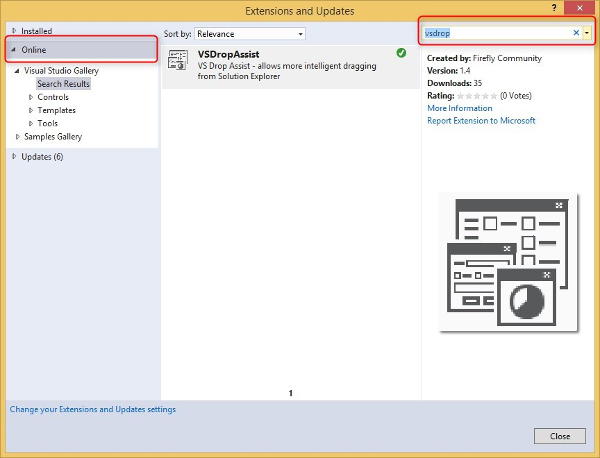
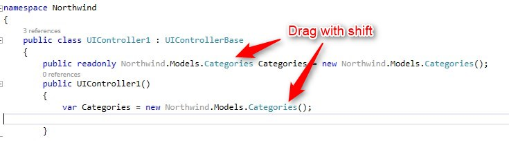

Coding less using the VSDropAssist extension
A new extension brought to you by the Firefly Community is called VSDropAssist – it allows you to benefit from the drag & drop capabilities of VS, so you can have more useful dragging from the solution explorer.
This clip demonstrates the usage of this extension:
You can also download it from VS – go to Tools / Extensions and updates, click on the Online tab and search for “vsdrop”:

Please check for updates occasionally as we are improving this tool.
For instance, here are some improvements found in the latest version (1.4) :
- The entity name is highlighted once dragged using Shift, allowing you to rename the object name of the entity in the controller:

- When dragging the entity using Shift, the drop is location sensitive.
Drop in the class will create the object definition.
Drop inside a method will create a member of the entity:

Help us improve, Edit this page on GitHub